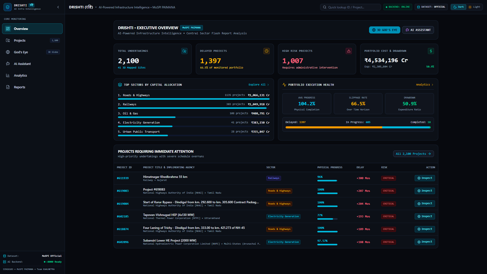
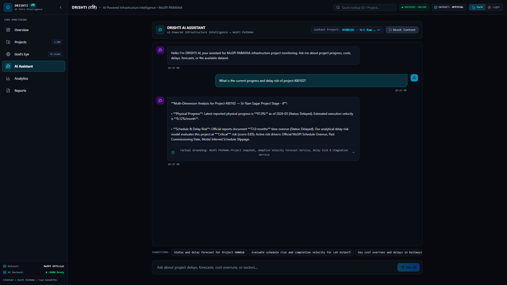
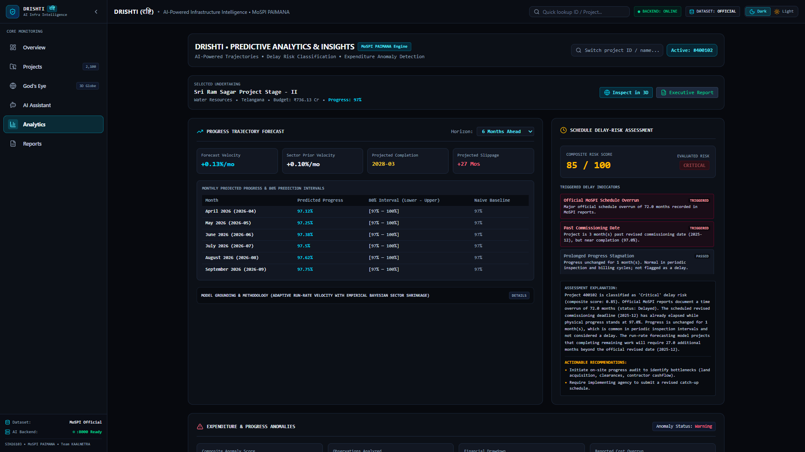
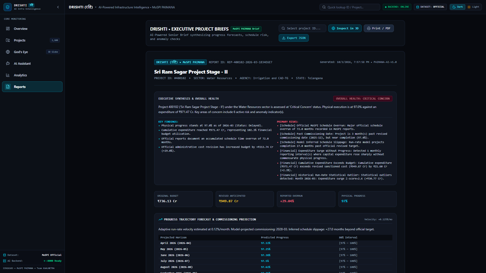

PORTFOLIO: 2,100 PROJECTS•SECTOR: CENTRAL SECTOR INFRASTRUCTURE

DATA-DRIVEN INFRASTRUCTURE MONITORING
Macro-level monitoring across 2,100 Central Sector undertakings worth ₹4,534,196 Cr. Systematic identification of 1,397 delayed projects and capital distribution across Roads, Railways, and Energy.
3D geospatial visualization mapping infrastructure projects across India. Features multi-spectral status markers, high-resolution satellite terrain, and site-level telemetry for Project #400102.

DRISHTI AI ASSISTANT // GROUNDED INQUIRY
Grounded AI responses using PAIMANA project data and deterministic analytics. Synthesizes physical progress (97.0%), monthly velocity (0.12%), schedule delay (+72.0 mos), and Critical 0.85 risk score.

DRISHTI // PROJECT PROGRESS FORECAST
Adaptive Run-Rate Velocity forecasting (+0.13%/mo), 6-month prediction intervals, and composite risk scoring grounded in multi-month PAIMANA reporting data.

DRISHTI // EXECUTIVE PROJECT BRIEF
Executive brief synthesized from PAIMANA project data and analytical indicators. Multi-dimensional summary covering progress velocity, cost variance, schedule slippage, and anomaly indicators.